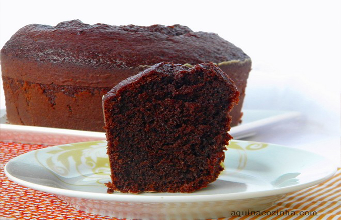
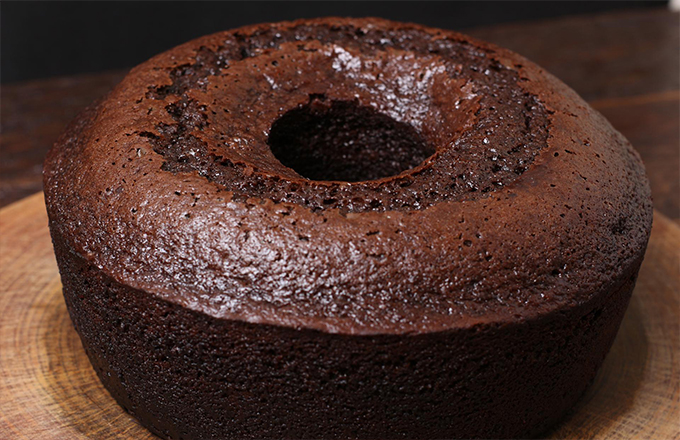
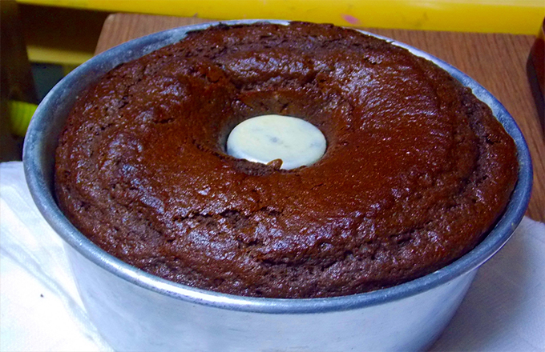
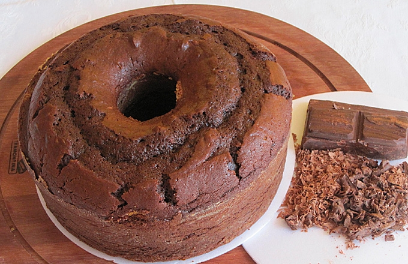
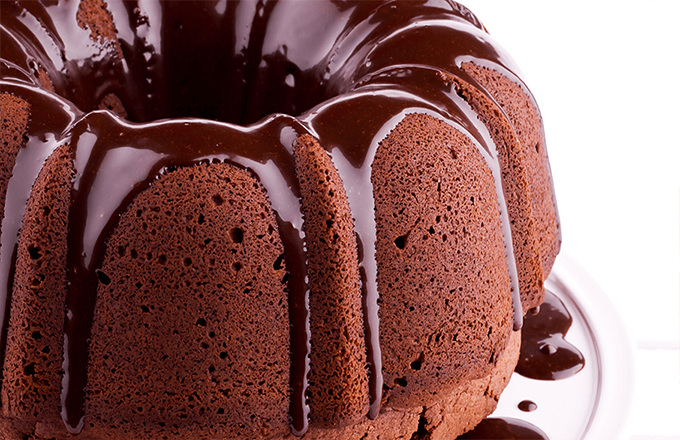
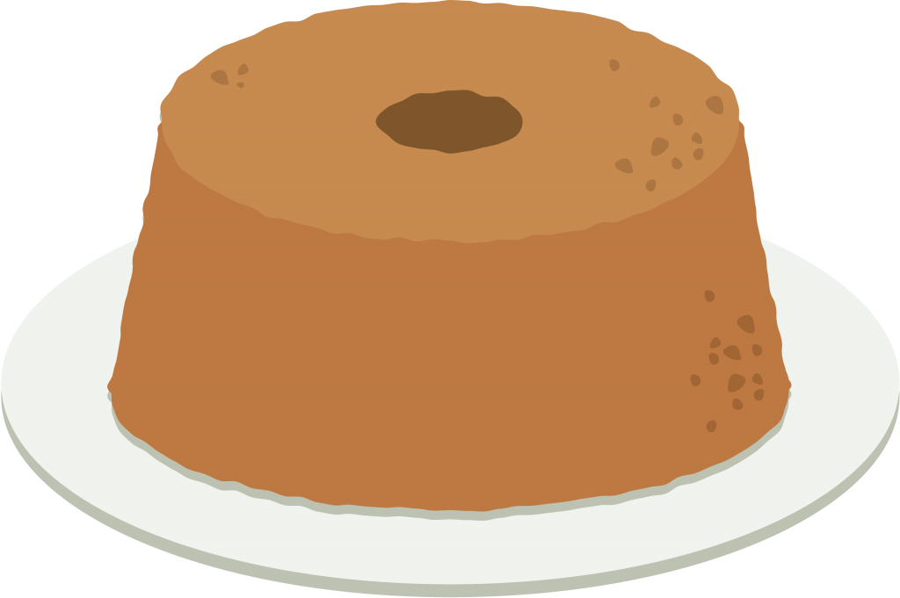
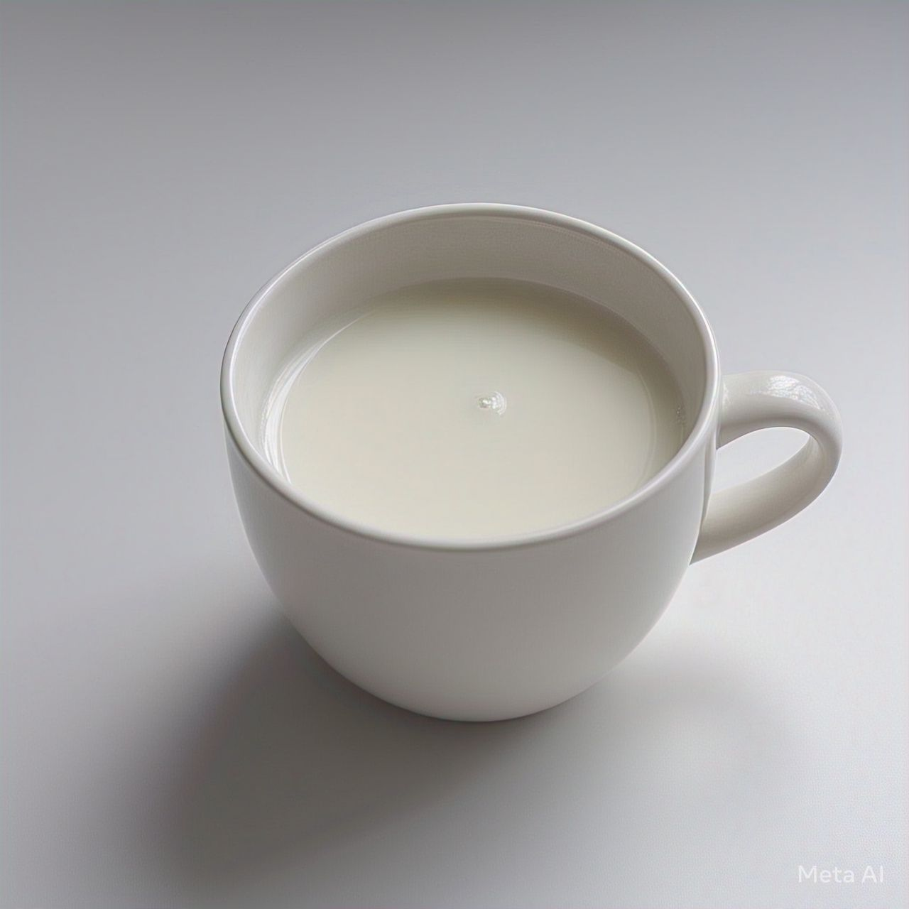

Buscar
Voltar para Receitas
❮
    
❯
Bolo de Chocolate Simples

Tempo de preparo:
40 minutos
Ingredientes:
2 xícaras de farinha de trigo
1 xícara de açúcar
3 ovos
 1 xícara de leite
1/2 xícara de óleo
1 colher de sopa de fermento
1 xícara de chocolate em pó
Modo de Preparo
Pré-aqueça o forno a 180°C.
Em uma tigela, misture a farinha, o açúcar e o chocolate em pó.
Adicione os ovos, o leite e o óleo, misturando bem até obter uma massa homogênea.
Por último, acrescente o fermento e misture suavemente.
Despeje a massa em uma forma untada e leve ao forno por cerca de 40 minutos.
Retire do forno, deixe esfriar e sirva!
 2 xícaras de farinha de trigo
2 xícaras de farinha de trigo 3 ovos
3 ovos 1 colher de sopa de fermento
1 colher de sopa de fermento 1 xícara de chocolate em pó
1 xícara de chocolate em pó